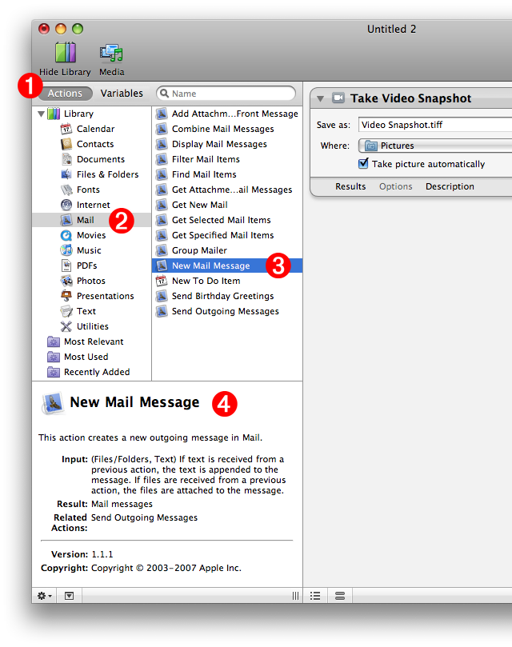

Tutorial 01: Finding the Next Action
Using the Starting Points dialog, the intial action in the workflow was added to the workflow. The next action will take the result of the previous action, in this case an image snapshot, and use it to create a new outgoing Mail message with the image as an attachment. To locate the next action to add to the workflow, follow these steps:
- The library of installed Automator actions is displayed in the two columns on the leftside of the window. Click the Actions button to display the available action categories and their actions.
- Since the job of the next action will be to create a new outgoing Mail message containing the image taken by the first action in the workflow, click the Mail category in the leftmost action category list. The actions contained by this category will be listed alphabetically in the adjacent column.
- Looking at the titles of the actions in the Mail category list, find one that looks like it would be used for creating a new Mail message. Click the New Mail Message action title in the list.
- When an action title is selected, a description of the action will be displayed in the description field at the bottom left of the window. According to the description, this action looks like what we need for the workflow.
Continue to the next page to find out how to add the action to the workflow.
